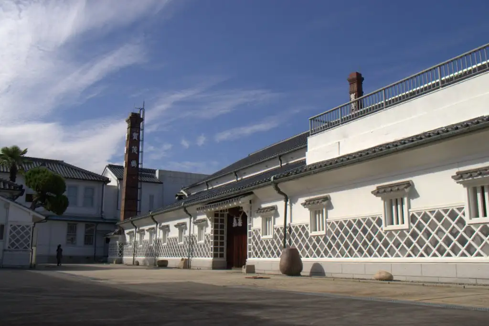
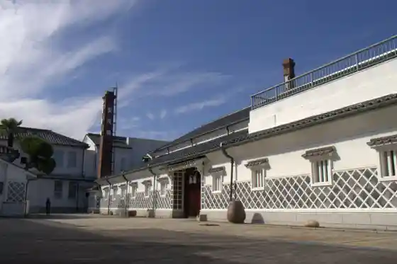
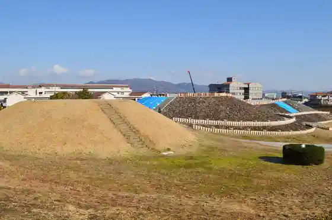
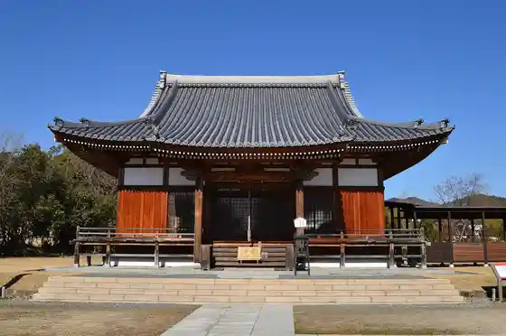
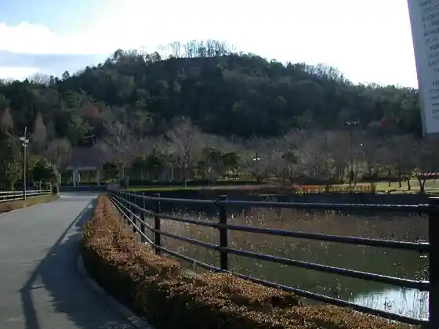

Japan / Hiroshima / Higashihiroshima
Higashihiroshima
Higashihiroshima · Hiroshima
Higashihiroshima
Highlighted on the Hiroshima map.

Stay
Higashihiroshima Guriin Hotel Morisu
Hotel Eriawan Hiroshima Uingu (Shishi Fuku Onsen) (Hotel Eriawangurupu)
Besseru Hotel Higashihiroshima (Higashihiroshima Ekimae)
Hotel Kamo [HOTEL KAMO]
Hotel Rutoin Higashihiroshima Saijo Ekimae
Bincho Sumi Baths Hotel Higashihiroshima Hiruzu Saijo Inta (BBH Hotel Gurupu)
Hotel Sanraizu 21
Toyoko INN Higashihiroshima Saijo Ekimae
Saijo HAKUWA Hotel
Dining
Sandaime Tori Mero Hiroshima Saijo Ekimae Mise
Ya Dai Zushi Saijo Eki Shuzo Tori Town
Yakiniku Ushi Mai Saijo Mise
Mune Karage to Kyo Sake Meshi Miraizaka Hiroshima Saijo Ekimae Mise
Ta Sake Ta Sai
O Konomi Yaki Tokugawa Saijo Mise
Sazanka
Yamauchi Nojo Saijo Ekimae Mise
Oishii Washoku Hana Gokoro
Uotami Saijo Ekimae Mise
Ryoriya Sobiki
Sumibi Yakiniku Man Maru Saijo Mise
Isshin
Nikuryori Haru Ki Ro
Sushi Tei Saijo Ekimae Mise
BAR & DINING Nao's
Onsen
Higashihiroshima Guriin Hotel Morisu Dansei Public Bath
Hotel Eriawan Hiroshima Uingu (Shishi Fuku Onsen) Onsen Supashion
Hotel Kamo Tennen Onsen Hottokamo
Hotel Rutoin Higashihiroshima Saijo Ekimae Public Bath
Bincho Sumi Baths Hotel Higashihiroshima Hiruzu Saijo Inta Bincho Sumi Baths
Sights
Saijo Shuzo Tori

San Tsu Shiro Burial Mound

Aki Kokubunji

Kagamiyama Castle Ruins

Saijo Eki